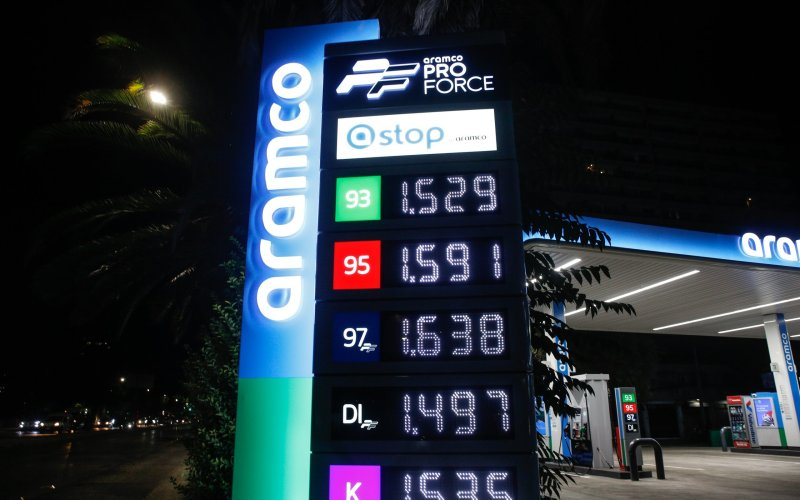

| Fuerte alza en combustibles impacta a conductores y transporte |

Economía |
Esta semana se concretó un alza de hasta $370 por litro en las bencinas y de hasta $580 en el diésel, mientras el Gobierno reconoció dificultades técnicas para subsidiar el transporte público en regiones. |
| Gremios educacionales alertan por violencia escolar tras ataque en Calama |
Actualidad |
Organizaciones de profesores y asistentes de la educación pidieron medidas urgentes luego del ataque ocurrido en un liceo de Calama, señalando que la violencia es uno de los principales problemas del sistema escolar. |
| Debate político por honorarios y estructura de asesores del nuevo gobierno |
Política |
En medio del cambio de administración, se instaló la discusión sobre las remuneraciones de asesores, tema que según reportes está regulado por un sistema fijado por comisión y respaldado por ley. |